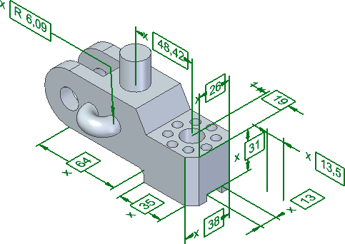
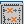
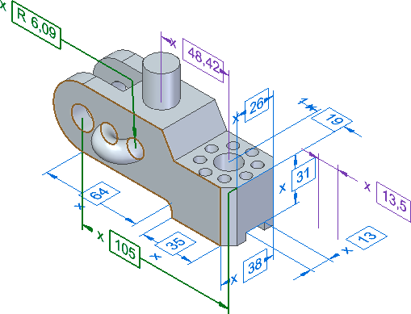
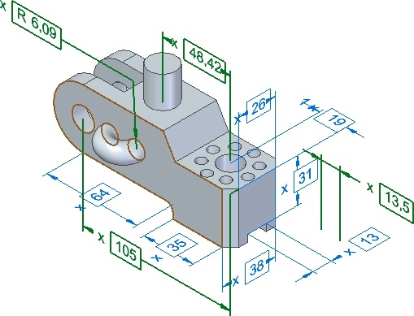
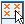
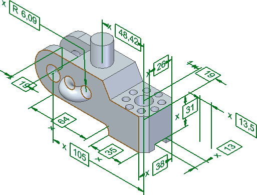
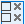
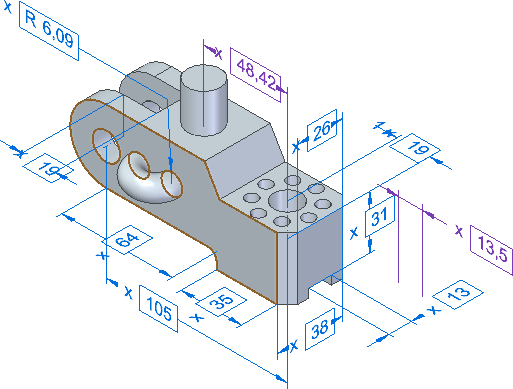

Create a PMI model view
PMI model views form the basis for model based definition (MBD), which provides a single, digital definition of design geometry and non-geometric information, such as annotations, tolerances, surface finishes, and other manufacturing data.
You can create the PMI views with the required orientation and PMI information that is displayed in the work area. You can also choose to display the required PMI information such as dimensions, annotations, sections, and so on.
For more information, see Solid Edge Model Based Definition (MBD).
-
Choose the PMI tab→Model Views group→Model View command
 .
.Alternatively, you can use the Model View Palette pane to choose the Model View
command. For more information, see Show model views in a palette. -
Under Format, click Model View Options to specify the name of the view, render mode, and section display preferences.
For more information, see Model View Options dialog box.
Before starting the command, if the model is in the standard orientation (front, top, right, or so on), the name of the corresponding standard view is displayed as a name of the model view. You can use the box next to the Model View Options button to specify the required name.
-
Under Plane Selection, click Select Plane and select the plane or planar face to orient the model parallel to it.
-
To set the current orientation of the view, click Set View Orientation .
The view orientation is stored in the model view definition and it will not be affected by subsequent view manipulation before you click the Finish button. If you do not use the Set View Orientation option, the last orientation (at the time of clicking Finish) will be stored in the model view definition.
-
Under Options, choose between the following options to customize the display of the PMI:
Select Shown PMIs : Selects all the PMI that are currently displayed

Show and Select Coplanar Plane PMIs

: Shows and selects all the PMI that are in the current display plane
Show and Select Parallel Plane PMIs : Shows and selects all the PMI that are parallel with the current display orientation

Show and Select PMIs

: Displays all PMI and adds them to the select set
Deselect PMIs

: Deselects all the PMIs
When you choose any of the options, the selected PMIs are displayed in green . You can manage the selection of the PMIs from the work area or the PathFinder.
-
To create the model view with the displayed PMI information, click Finish.
-
You can create an empty model view (without any PMIs) and activate it later to create and add PMIs. To add the PMI information in an empty model view, right-click its node, select Activate, and then create the PMIs. The PMIs are automatically added under the activated model view.
-
You can create a drawing view with the PMIs displayed in the model view. For more information, see Create a PMI drawing view.
-
-
(Optional) To modify the PMI model view, right-click the node of the required view in PathFinder and select Edit Model View.
-
The model is reoriented according to the model view.
-
By default, all the shown annotations and the Select Shown PMIs option are selected.
-
How do I
Show model views in a paletteManipulate a PMI model view
Edit a PMI model view definition
Reorient a PMI model view
Use a 3D section view in a PMI model view
Learn more
Creating 3D model views with PMILook up more details
Review command (PMI model views)Review PMI model views
Activate or deactivate a view
Model View Options dialog box
Add To Model View dialog box
Remove From Model View dialog box
Edit Definition command (PMI, sections, model views)
Set View Orientation command
Upload Model Views command
Quick links
PMI dimensions and annotationsPMI in drawing views